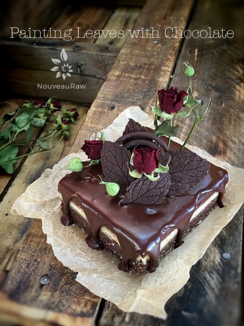

Painting Leaves with Raw Chocolate

A chocolate leaf is made by painting a real leaf with melted chocolate and letting it harden. When you peel off the actual leaf, you end up with a delicate piece of chocolate leaf that has been imprinted with the real leaf’s pattern.
I am passionate about sharing with you everything that I have learned over the years. These are so simple to make, so please don’t be discouraged by the length of this post. I went into great detail to set you up for success. So let’s do this…
Selecting the right leaves:
- You will want to use sturdy leaves with prominent veins.
- Make sure that the leaves are not poisonous or have chemicals on them… this will transfer to the chocolate. If you are unsure, click (HERE) to learn which plants are or aren’t poisonous.
- I like to use camelia, gardenia, and rose leaves. Herbs also work great. In the photos, I used mint and basil. While we’re not going to be eating the leaves, it’s a good idea to make sure that your leaves are not toxic. I don’t recommend sage leaves or any other leaf that feels fuzzy; the chocolate won’t release very well.
- Determine the size of leaves needed for the dessert that you are decorating. You don’t want to use huge leaves on a small dessert.
- Be sure to wash the leaves with soap and water and pat dry. If there is any residue on the leaf, even those things invisible to the human eye, it will transfer to the chocolate.
- Select leaves that don’t have any tears, holes, or are limp and frail.
- Use a variety of sizes to create depth and movement to the arrangement that you create on the dessert.
- If possible, when removing the leaves from the stem, leave a tail of the stem on so you have something to hold onto while you are painting the leaves and which will also aid when removing them from the chocolate.
Prepare the work surface:
- Place a sheet of parchment paper on the counter.
- If you think you will need to move the parchment paper when you are done, and they are still setting up… place the parchment paper on a baking sheet for the ease of transferring it to another location.
- If your house is really warm, you will want to place the end project in the fridge to stay hard, so this is also an excellent time to have the parchment paper on that baking sheet.
- Prepare a larger sheet of paper than what you anticipate in using. You don’t want to be scrambling last-minute for more space to work on.
- I like to use a chopstick to lay some of my leaves over once painted with chocolate, which will add “texture” to the overall design that you create on the dessert.
- Have all the leaves ready and waiting.
- You will need a crafters paintbrush. I like to use one that is cut to a slight angle. Use a brush size that is appropriate for the size of leaves that you are doing.
How to paint the leaves:
- It’s just a matter of brushing on the chocolate. BUT let me share some tricks that I have learned along the way…
- Make sure to flip over the leaves over and paint the backside. This way, you will have more detailed vein impressions on the chocolate when the leaf is peeled off.
- Use a thick coat of chocolate or paint them twice. If the chocolate painted on the leaves is too thin, they will break when you try to peel off the green leaf.
- Try not to let any chocolate get on the other side of the leaf as it will be harder to peel off later.
- There are two ways to paint the chocolate on:
- Lay the leaf on the parchment paper, hold onto the tail of the leaf, and brush a heavy coat of chocolate on the leaf. Lift the leaf up and move it to a clean spot; this keeps the edges clean and sharp.
- Or you can hold the leaf on your pointer finger and paint the chocolate on. I tend to do this as I feel that I have more control, but it does leave you with chocolate-covered fingers… which I find is a reward for all my hard work. :) Find your rhythm.
- Allow the chocolate to dry for at least 6 hours by either leaving them on the counter, placing them in the fridge, or sliding them into the freezer. If you rush the dry time, the chocolate will crack apart when you try to remove the leaf.
- The chocolate painted leaves will go from a glossy look to a matte look. That’s your indicator when the chocolate is dry.
- IF you have any leftover chocolate, create chocolate embellishments freehand style for other dessert decorating projects. Or if you are in a rush, and I often do this… pour the extra chocolate on the parchment paper and cover with nuts. Let it dry and eat like a beautiful piece of candy that it is.
Removing the green leaf:
- When the chocolate has thoroughly dried, it is time to remove the leaves.
- Gently, pull from the stem and slowly raise the leaf from the chocolate. If they break too much, that means that you didn’t put enough chocolate on the leaves. Stop, and paint more on before you break the rest of them.
- Try not to handle the leaves too much to prevent your body heat from melting the chocolate.
- Decorate the dessert or store them for future use.
Storing the leaves:
- Chocolate leaves can be made several weeks in advance and stored in an airtight container at cool room temperature.
- They are delicate, so stack and store them carefully. If stacking, place parchment paper in between.
- If it’s very warm, they are best stored in the refrigerator, although this might result in condensation spots.
For raw hardening chocolate recipes, check out the following:
And if you have any leftover chocolate… Just saying….
© AmieSue.com